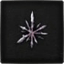
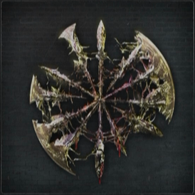

Blood Gems are upgrade items in Bloodborne that the player can upgrade their Weapons with at the Workshop. Can drop in Chalice Dungeons, be found in chests or dropped by certain enemies. You can also consume some special items to gain unique Blood Gems.
There are several types of Blood Gems, which are further divided into categories determined by the general shape of the Gem. Radial, Triangular, and Waning Blood gems are installed onto right-hand weapons. Circular gems are installed onto left-hand weapons (Except the Lost Chikage, which has a circular socket). Droplet can be fit into any socket regardless of its shape. Blood Gems can be installed to Weapons after their Imprint sockets are unlocked via upgrading. A new socket is unlocked at upgrade levels +1, +3 and +6. (Firearms only have 1 or no socket). However, installation of a Blood Gem is not permanent: One can remove blood gems and reinstall new ones at the workshop table at any time without consequence or cost.
Blood Gems' strengths vary greatly. This is represented by its rating of 1-20, although higher rarity blood gems are not guaranteed to be stronger than lower level gems.
Some Initial Blood Gem Tips
- You can read This very detailed guide to understand Blood Gems, drops and farming. Further articles include builds and farming tips, check them out here.
- The only known way to gain Bloodtinge Gemstones as drops are from Bloodsucking Beasts and Labyrinth Ritekeepers from chalice dungeons.
- Gems that grant bonus elemental damage will change your weapon's damage form from physical to bolt/fire/arcane and become scaled by your Arcane stat (strength and skill scaling will be disabled) when installed, unless the weapon deal multiple damage forms by default, in which case the weapon will retain physical/skill scaling but changes damage form to bolt/fire/arcane.
- Some blood gems have the "cursed" prefix and reduce the weapon's durability. However, multiple installations of such gems do not stack up in effect. E.g. installing 1 cursed blood gem which decreases weapon durability by say 50 and installing 2 of the same gems will make the weapon equally easy to break.
A complete list of Blood Gem effects:
- increase physical damage (/percentage) = Tempering
- increase blunt damage (percentage) = Adept
- increase thrust damage (percentage) = Adept
- increase arcane damage (flat/percentage) = Arcane
- increase fire damage (flat/percentage) = Fire
- increase bolt damage (flat/percentage) = Bolt
- increase blood damage (flat/percentage) = Bloodtinge
- increase all damage (percentage) = Nourishing
- decrease all damage (percentage) = (random curse)
- increase damage vs. Beast (percentage) = Beasthunter
- decrease damage vs. Kin (percentage) = Kinhunter
- increase stamina cost (percentage) = (random curse)
- decrease stamina cost (percentage) = Radiant
- increase charge attack damage (percentage) = Striking
- add slow poison effect = Murky
- add rapid poison effect = Dirty
- boosts rally potential (increased health recovery by dealing damage after taking hit) = Lethal
- increase physical damage at full HP (percentage) = Fool
- increase physical damage when near death (percentage) = Poorman
- increase damage against open foe (i.e. counter damage) (percentage)
- increase strength scaling = Heavy
- increase skill scaling = Sharp
- increase arcane scaling = Cold
- increase bloodtinge scaling = Warm
- HP gradually depletes by a flat amount = (random curse)
- HP gradually regenerates by a flat amount = Pulsing
- decrease weapon durability = (random curse)
- increase weapon durability = Dense
- Adds flat physical damage = Odd Tempering
Adds flat arcane damage = Odd Arcane
Adds flat fire damage = Odd Fire
Adds flat bolt damage= Odd Bolt
Adds flat blood damage = Odd Bloodtinge
- A blood gem may contain up to 3 effects
- not every combination of 3 effects is possible
Blood Gems List
Radial Blood Gems
| Name & Icon | Best Possible Gem Versions Location | |
|---|---|---|
Tempering Blood GemstoneEffect: Physical ATK UP +% |
1-10 | Lower Pthumeru Root Chalice Bosses Chalice Dungeon |
Cursed Tempering Blood GemstoneEffect: Physical ATK UP +%Effect: Random negative effect |
1-10 | Fetid Lower Pthumeru Root Chalice awd85dhdd: Layer one. Dropped by fire wielding mummy that's guarding the lever |
Tempering Damp Blood GemEffect: Physical ATK UP +% |
11-19 | Pthumeru Ihyll Root Chalice Bosses in this Chalice Dungeon |
Cursed Tempering Damp Blood GemEffect: Physical ATK UP +27.2%Effect: Random negative effect |
11-19 | Pthumeru Ihyll Root Chalice (with Cursed rite) Bosses in this Chalice Dungeon (Watchers) Glyph: pwmf22gu |
Effect: Blunt or Thrust ATK UP +% |
1-10 | Lower Pthumeru Root Chalice Bosses Chalice Dungeon |
Cursed Adept Blood GemstoneEffect: Blunt or Thrust ATK UP +%Effect: Random negative effect |
1-10 | ?? |
Effect: Blunt or Thrust ATK UP +% |
11-19 | Pthumeru Ihyll Root Chalice Bosses in this Chalice Dungeon |
Cursed Adept Damp Blood GemEffect: Blunt or Thrust ATK UP +%Effect: Random negative effect |
11-19 | Pthumeru Ihyll Root Chalice (with Cursed rite) Bosses in this Chalice Dungeon (Undead Giant) Glyph: pwmf22gu |
Fire Blood GemstoneEffect: Fire ATK UP +% |
1-10 | Lower Pthumeru Root Chalice Bosses Chalice Dungeon |
Cursed Fire Blood GemstoneEffect: Fire ATK UP +%Effect: Random negative effect |
1-10 | Pthumeru Chalice 2 fire enemies that drop down |
Cursed Fire Damp Blood GemEffect: Fire ATK UP +23.9%Effect: Random negative effect, add fire |
11-19 | Pthumeru Ihyll Root Chalice (with Cursed rite) Bosses in this Chalice Dungeon (Watchdog) |
Nourishing Damp Blood GemEffect: ATK UP +flat |
11-19 | Pthumeru Ihyll Root Chalice Bosses in this Chalice Dungeon (Amygdala and Rom, the Vacuous Spider) |
Cursed Nourishing Damp Blood GemEffect: ATK UP +%Effect: Random negative effect |
11-19 | Pthumeru Ihyll Root Chalice (with Cursed rite) Bosses in this Chalice Dungeon (Amygdala and Rom, the Vacuous Spider) |
Odd Tempering Blood GemstoneEffect: Adds physical ATK +flat |
1-10 | Lower Pthumeru Root Chalice Bosses Chalice Dungeon |
Odd Tempering Damp Blood GemEffect: Add physical ATK +flat |
11-19 | Pthumeru Ihyll Root Chalice Bosses in this Chalice Dungeon |
Cursed Odd Tempering Damp Blood GemEffect: Adds physical ATK +flatEffect: Random negative effect |
11-19 | Pthumeru Ihyll Root Chalice (with Cursed rite) Bosses in this Chalice Dungeon |
Heavy Blood GemstoneEffect: Improves STR scaling +flat |
1-10 | Lower Pthumeru Root Chalice Bosses Chalice Dungeon |
Cursed Heavy Abyssal Blood GemEffect: Improves STR scaling +65Effect: Random negative effect |
20 | Pthumeru Ihyll Root Chalice (with Cursed rite) Bosses in this Chalice Dungeon (Headless Bloodletting Beast) |
Sharp Blood GemstoneEffect: Improved Skill Scaling +flat |
1-10 | Lower Pthumeru Root Chalice Bosses Chalice Dungeon |
Cursed Sharp Damp Blood GemEffect: Skill Scaling UP +flatEffect: Random negative effect |
11-19 | Pthumeru Ihyll Root Chalice (with Cursed rite) Bosses in this Chalice Dungeon (Keeper of the Old Lords) |
Cold Blood GemstoneEffect: Arcane Scaling UP +flat |
1-10 | Lower Pthumeru Root Chalice Bosses Chalice Dungeon |
Murky Blood GemstoneEffect: Adds slow poison effect +flat |
1-10 | Lower Pthumeru Root Chalice Bosses Chalice Dungeon |
Dirty Blood GemstoneEffect:Adds rapid poison effect +flat |
1-10 | Lower Pthumeru Root Chalice Bosses Chalice Dungeon |
Dirty Damp Blood GemEffect: Adds rapid poison effect +flat |
11-19 | Pthumeru Ihyll Root Chalice Bosses in this Chalice Dungeon |
Beasthunter's Damp Blood GemEffect: ATK vs Beast UP +% |
11-19 | Pthumeru Ihyll Root Chalice Bosses in this Chalice Dungeon |
Kinhunter's Damp Blood GemEffect: ATK vs the kin UP +% |
11-19 | Pthumeru Ihyll Root Chalice Bosses in this Chalice Dungeon |
Striking Blood GemstoneEffect: Charge ATKs UP % |
1-10 | Lower Pthumeru Root Chalice Bosses Chalice Dungeon |
Striking Damp Blood GemEffect: Charge ATKs UP +% |
11-19 | Pthumeru Ihyll Root Chalice Bosses in this Chalice Dungeon |
Effect: Charge ATKs UP +% |
11-19 | Pthumeru Ihyll Root Chalice (Watchers) |
Radiant Blood GemstoneEffect: Reduces stamina cost -% |
1-10 | Lower Pthumeru Root Chalice Bosses Chalice Dungeon |
Cursed Radiant Damp Blood GemEffect: Reduces Stamina costs 8 %Effect: Random negative effect |
11-19 | Pthumeru Ihyll Root Chalice Bosses in this Chalice Dungeon (Maneater Boar) |
Fool's Blood GemstoneEffect: Phys. UP at full HP +% |
1-10 | Lower Pthumeru Root Chalice Bosses Chalice Dungeo |
Gold Blood GemEffect: ATK vs beasts UP +% |
11-19 | ?? |
| Cursed Fire Abyssal 24.8% fire add random second effect |
20 | FRC Ihyll Boss: Watchdog |
| Cursed Bolt 20-22% bolt second effect doubled |


Gallery


Other Blood Gem Guides (external sources)
- The Bloodborne Sheets by Sljm8D (guide for top-tier Blood Gems, Runes and other Labyrinth goodies)
- The Arcanist Cookbook by Sljm8D (farming guide for the setting up Arcane builds)
- Fixed Blood Gem locations (main game and labyrinth) by Sljm8D
- How Do Gems Drop In Labyrinths by Sljm8D
- Chalice Dungeon Codes for Blood Gem Farming by kazin1979
 Anonymous
AnonymousQuick question: if I use a gem that converst phisical damage to elemental and only gives the weapon arc scaling, would putting a heavy or sharp gem on it as well make it scale with both arc and str/sex?
- Anonymous
The 2nd reason of pvp being almost non-existant. The 1rst being the stupid bells.
- Anonymous
Honestly if youre looking to get your damage up, but not willing to go through extreme chalice hunting, i recommend getting the 22% Droplets from the Winter-Lanterns lurking below the Old Hunters lighthouse. getting 7 droplets at around 22% with stamina curse to fully kit out 2 entire melee weapons and a firearm regardless of gem shapes is much more appealing to me personally. yes i miss out on 15% or so total damage compared to perfect 27% gems...but it takes a fraction of the grinding effort.
- Anonymous
I found a farming spot for 25% radial gems 4aia3j3v Rotted,cursed,fetid Pthumeru Ihyll root chalice, head out to the left after the layer 1 lamp and enter the second door to the left, up the stairs there will be the lever and a fat one, kill it and it will drop it (sorry for bad english)
- Anonymous
What is the inventory limit for blood gems? It seems to be insanely high.
- Anonymous
- Anonymous
does anyone know any good false depth dungeons that are good to farm???
- Anonymous
Sell thoses you don't need if your inventory is madness. Stunning Eyes Rune help ennemies to drop them more often just saying.
- Anonymous
Way better system than titanite infusions. I just wish the inventory menu wasn't so archaic because i have way too many cursed gems and scrolling through takes forever
I managed to get a cursed fire blood gemstone to drop in the pthemeru root chalice. No rights active.
- Anonymous
Why isn't the Cursed Pulsing (regen) Radial in this list? I didn't even know what dropped one when i saw it in my inventory, and now i want another and idk where to go.... and yes it's a radial with 5 hp regen, not a circle off the walking ritual master...
Is Winter Lantern the best way to farm Blood Gem without going to Chalice Dungeon?
- Anonymous
I've just got a Tempering Abyssal Blood Gem (non cursed, rating 20) which is missing in this list. Dropped by final boss in Pthumeru Ihhyl Root with foetid and rotten offerings.
- Anonymous
Someone please tell me the difference in "tier" and "rating" when it comes to this wiki. Ex. Says I can find tier 6-7 fire blood gems from beasts in frontier but I'm only finding (2)'s but rating says 6 or 7. is tier the same thing as rating or what???
I scoured all three Bloodborne wikis as well as Reddit for glyphs and the details about those glyphs. Then I checked every single one of them to see if they were still active, some of them twice just to make sure they were really dead. This is what I came up with; the fastest paths to all the Runes and Lost / Uncanny weapons as well as all the gem farming glyphs that are still active. Enjoy! docs.google.com/spreadsheets/d/1O8N7xnoSS935oL6eqfqDngmK0bUqqYpy1Ytoc5_cwwQ
- Anonymous
What if u put two elemental gem types on a weapon and the weapon was t converted to an arcane scaling weapon.But is still able to do the % elemental damage from the gem.Ex:add atk%+add fire atk along with add atk%a long with add bolt atk.Do they cancel out or do u do both damage?
- Anonymous
For anyone who is wondering, you can get a cursed cold abyssal blood gem (65+ arcane scaling) from the last boss (pthumeru elder) from this chalice: 6fsa5tyt.
you get the gold blood gem for selecting the "use" over Vicar Amelia after she drops her gold pendant.
- Anonymous
The shark Giants from the DLC routinely drop damp bloodtinge gems of a relatively high level (+14-22% blood atk up, +5-10 flat blood atk) and even some tempering damp bloodtinge gems rarely (+8-14% physical atk, +8-14% blood atk up)
- Anonymous
There's one kind of Bloodgem missing from this list. I got a pulsating bloodgem from a random Bagman in the Lower Pthumeru Chalice once. I dont know any locations besides that but surely someone else has encountered them? Their effect seems to solely be HP regen.
- Anonymous
Common locations (for Chalice farming)
Radial Gems: Pthumeru
Triangular Gems: Isz
Waning Gems: Loran
Circular Gems: Bloodlickers (Visceral attack everything, revisit rooms for decent chances of encounter.)
Additionally I recommend Root chalice diving due to high chances for ornate doors. (which lead to mini-bosses & gold coffins)
Outside of chalices it is also possible to find gems that are dependent on the enemies they drop from. (For example snakes in the garden er-forest I mean drop gems with slow poison buildup. )
- Anonymous
I have once looted a bloodtinge bloodgem as a random drop from a cloacked beast in old Yharnam
- Anonymous
For farming the Watchers, If you're not that great at visceral attacking (like me), Amygdalan Arm charged transformed attack pancakes them and has high range. Makes it an easy fight...space, pancake, dodge...repeat
- Anonymous
I've noticed the 'Damp' prefix on some blood gems. I get the feeling that it just means that they're more powerful than 'dry' blood gems, but I don't know for sure. Can someone explain?
- Anonymous
- Anonymous
You can get the gold blood gem by defeating Vicar Amelia and using the gold pendant.
- Anonymous
Is it me or does the Orphan of Kos's strange weapon thing almost look similar to a giant Waning Blood Gem?
- Anonymous
I don't know if this was already said, or if this information is even helpful, but I got a Tempering Blood Gemstone from fighting the Executioner in Central Yharnam. It's random as far as I know since I was just getting Blood vials beforehand, but I got it before fighting Father Gascoigne.
Don't worry. I will change the blood gems back to english. :D
- Anonymous
Whoever did the Radials in spanish, your a waste of space and time.
- Anonymous
- Anonymous
I think you get strength gems for bloodstarved beast. Can anyone confirm?
- Anonymous
It would appear that the Hunter Enemies( Beastcutter variant at least) in Hunter's Nightmare drop some nice radial blood gems. I got my Chikage outfitted almost entirely thanks to this.
- Anonymous
I have radial bolt gems on another character, but I cant remember how to get them. Any Ideas?
- Anonymous
I actually have a Tempering Circle Gem with 8.8% Phys and 11.3% Blood Atk up. I just don't know where I got it.
- Anonymous
at higher chalice maps, you got very powerfull gems. I got level (5) - (6) gems with a evaluation of 17 - 19 at defiled pthumeru and lower loran.
- Anonymous
it appears that bloodgems are not consumed when placed in a slot ands can be easily added and removed at the workbench.
- Anonymous
Does adding a gem that gives a weapon elemental damage negate the physical scaling of the weapon or just split the damage and make it scale with Arcane as well? I'm seeing different opinions about this and no one seems to have talked about it or added info on it here yet.
- Anonymous
I put a slow poison in my weapon but i cant push the poison to any enemy. Why? (sorry for my english)
- Anonymous
I noticed there is a gem type for every sub category except for bolt. Is it simply not been found, or does it not exist period. Also is there locations for these.. or is it random? My friends and I have got the same items off static chests (dead bodies) but I could see it being different on monster drops.
- Anonymous
sometimes the endbosses of a depth 5 dungeon dropping a level 20 gem which have 2 primary effects. A level 20 radial gem has always physical atk up by % + an another effect like physical atk up by absolute number.
- Anonymous
If someone's interested i got it with a tempering damp bloodgem (5)
- Anonymous
Can any1 tell me if there are blood gems for dealing bleed or frenzy damage and any possible locations if so please please please.....
I got one of these from the chevaliers in the Cainhurst Castle.
- Anonymous
I was wondering if I put two of the same gems on, ATK vs the Kin for instance, will the two equipped gem effects stack for higher damage?
- Anonymous
i run a anti beast and anti human saw cleaver, using high level bloodgems +23,x% physical vs. reduced beast/human damage. both weapons have ~ 700 AR without weaponbuff. due to its moveset, attack speed and poise damage, its the strongest one hand weapon for pve in my opinion.
- Anonymous
Does any body know where I can find a blood gem that adds arcane damage?
farming The brain guys at nightmare of mensis 2nd bonfire gives regular and or cursed droplet blood gems. droplet gems are the best since u can place them into any gem slot and they have really high stats on em. (ex. got a 19.8% attk up with a 2.7% stam increase) the dropped gems are purely random and can range from elemental, status effects and dmg.
- Anonymous
Don't know if this is a bug or not, but I've noticed 2 types of gems with elemental types: 1 that "ADDS" elemental damage and another that "UPS" elemental damage (by percentage I believe). But when messing with the gems that "add," they instead completely replace physical damage (just like like the gems that "UP" damage) to that element EXCEPT any weapon that already has an elemental damage such as Logarius Wheel or Tonitrus--I actually could 'add' fire to this weapon according to the stats without replacing bolt :P Anyways, I believe the gems that are suppose to "ADD" elements should do just that...add along side physical damage. When I "add bolt ATK +12" to Holy Blade, stats completely change from: Physical ATK = 0.......Bolt = 190. But when I add to Logarious Wheel, I get: Physical ATK = 200 +194.........Bolt ATK = 12. Anyways, figured I would post this. Don't know if anybody has further tested this and know if it's bugged or not.
- Anonymous
- Anonymous
Just got this a few minutes ago from the Pthumeru Ihyll Root Chalice after beating the last boss which was a Bloodletting Beast and it's a Rating 20 Radial Blood Gem. Gave Physical AT UP +15.8% and WPN durability UP +5.6. Judging from the way gems are named, I'd guess that almost if not all Rating 20 gems will be Abyssal gems. Description: "A blood gem that fortifies weapons and adds various properties. Abyssal blood gems are eldritch gems with a dim radiance that only grow deep inside the labyrinth. Most radial blood gems have effects that bear upon physical attacks."
- Anonymous
you can get them from the fire ball throwing witches from dungeon chalices.
- Anonymous
I have one fire moon formed bloodgem with 2 effects FIRE attack 14.2 THUNDER attack 12.5 Which element is now
- Anonymous
I've almost completed NG+ but the highest blood gem level I've got is 5. How am I supposed to find one that is level 15+? The chalice dungeons?
- Anonymous
i picked one of these up for the first time and have never gotten one before after having many hours into multiple characters. unfortunately i wasn't paying attention from what enemy it dropped. anyone who has gotten one know from where (outside of chalices...chalices drop everything so that is redundant to say)
- Anonymous
https://www.youtube.com/watch?v=Rky6pyFa0hU came across this, looks decent
Where's the best place to farm good radial gems? All the ones I have are rather weak and I'm nearing the endgame.
- Anonymous
- Anonymous
From what I've seen so far, each of the 4 chalices give a specific shape of blood gem within their dungeons and with higher rating (better quality) further down the depth. Pthumeru: Radial Hintertomb: Circle Loran: Waning Isz: Triangular It would be great if this can be confirmed, as Hintertomb's max 3 depth doesn't look well for circle (left weapon) gems. As a side note, I'm definitely gonna go to first Isz dungeon for any future arcane builds first thing.
- Anonymous
Can i sell bloodgems that are useless to me ? i have to many, makes scrolling a pain. there is no other use for bloodgems, right ?
- Anonymous
- Anonymous
Got a warm blood gemstone (circle) from those lickers from the chalice dungeon pthumeru
- Anonymous
I got it from lower hintertomb with fetid and rotted after beating the blood starved beast
- Anonymous
Anyone know where I can find the high level odd bloodtinge gems? According to the collectors edition strategy guide I downloaded from here http://bit.ly/1bOeIEn it's possible to get hold of odd bloodtinge gems that add 93.8 flat dmg to your gun, but I've been farming chalice BSB for hours and he only ever drops the percent ones. Anyone manage to get hold of one yet??
- Anonymous
Long story short I got this burial blade that I hooked up some gems that add flat damage of fire and bolt to it so it covers all elements, so my question is will having too many damage types negate the other damage types in a weapon, or just all add up?
Here is a rough guide on which chalice dungeon bosses drop which kinds of gems. By no means is this a conclusive list, but it does offer a decent insight on how to get the higher level gems. Layer 3 and 4 bosses are the only way to obtain Abyssal (Rating 20 gems), but they honestly are not worth the effort involved. I kept it as short as possible so acronyms such as "Bsb = Bloodstarved Beast". Shouldn't be too hard to follow. Feel free to ask any questions. v3krwpyp - L1Wtchs L2Keep L3Blb L4Desc (Pthu) wikifcsa - L1Bps L2Desc L3Blb L4Blb (Pthu) 5pwujscd - L1Wtchs L2Desc L3Ebr L4Amy (Isz) d7qvvt6h - L1Boar L2Wtchs L3Amy (Isz) 7cp8uhnd - L1Wtchs L2Brain L3Elder (Isz) fxx4nw88 - L1Brain L2Wtchs L3Ebr (Isz) yiqtfe8d - L1Silv L2Bsb L3DrkB L4Amy (Lor) 2w3ixcda - L1Dog L2Keep L3DrkB (Lor) kmkxt3xy - L1Bsb L2Silv L3DrkB (Lor) (Pthu) Pthumerian Descendant - Radial Cold Damp/ Radial Tempering Damp (Pthu) Bloodletting Beast - Radial Heavy Damp / Radial Tempering Damp (Pthu) Beast Possessed Soul - Radial Tempering Damp (Pthu) Merciless Watchers - Radial Tempering Damp (Pthu) Keeper of the Old Lords - Radial Sharp Damp (Pthu) Dual Blade Undead Giant - Radial Adept Damp (Isz) Pthumerian Descendant - Triangle Tempering Damp (Isz) Pthumerian Elder - Triangle Cold Damp (Isz) Ebrietas - Triangle Arcane Damp (Isz) Amygdala - Triangle Nourishing Damp (Isz) Maneater Boar - Triangle Radiant Damp (Isz) Merciless Watchers - Triangle Fire Damp / Triangle Tempering Damp / Triangle Bolt Damp (Isz) Brainsucker - Triangle Tempering Damp (Lor) Loran Silverbeast - Waning Pusling Damp / Waning Bolt Damp (Lor) Blood Starved Beast - Circle Damp Bloodtinge / Circle Warm Damp (Lor) Loran Darkbeast - Waning Bolt Damp (Lor) Amygdala - Waning Nourishing Damp (Lor) Watchdog of the Old Lords - Waning Fire Damp (Lor) Keeper of the Old Lords - Waning Sharp Damp
Odd Bloodtinge: +1 to +93.8 Blood Attack. Odd Arcane: +1 to +93.8 Arcane Attack. Odd Fire: +1 to +93.8 Fire Attack. Odd Bolt: +1 to +93.8 Bolt Attack. Odd Tempering: +0.6 to +56.3 physical attack. Adept: +0.4% to +33.8% Thrust/Blunt attack. Bloodtinge: +0.4% to +33.8% Blood Attack. Arcane: +0.3% to +28.1% Arcane Attack. Fire: +0.3% to 28.1% Fire Attack. Bolt: +0.3% to +28.1% Bolt Attack. Tempering: +0.3% to 28.1% Physical Attack. Nourishing: +0.3% to 24.4% ALL Attack types. Heavy: +0.3 to +28.1 Strength scaling. Sharp: +0.3 to +28.1 Skill scaling. Warm: +0.3 to +28.1 Bloodtinge scaling. Beasthunter: +0.4% to 33.8% vs Beasts. (Can be a negative) Cold: +0.3 to +28.1 Arcane Scaling. Kinhunter: +0.4% to +33.8% vs Kin. (Can be a negative) Murky: +0.2 to +18.7 Slow Poison build-up. Dirty: +0.2 to 18.7 Rapid Poison build-up. Finestrike: +0.4% to +37.5% to Open Enemies (This means counter hits) Radiant: - 0.1% to -9.4% Reduction to Stamina Costs. (Can also be version which increases stamina costs) Striking: +0.4% to 37.5% Charge Attack Damage Pulsing: +0.5 to +5.6 HP per second. Lethal: +0.2% to +18.8% Regain HP per hit. Dense: +0.4 to +37.5 Durability. (Can also be negative, in which case it's -2 to -187.5) Fool (physical): +0.4% to +35.6% physical attack at full HP. Fool (all): 0.3% to 30% all damage at full HP. Poorman (physical): +0.4% to +37.5% physical attack at Poorman (All): +0.3% to +31.9% ALL damage at The highest rated gems can only be found in Depth 5 dungeons, these are gem ratings: 17, 18, 19 and 20. Gems Rated 13-16 can be found in Depth 4 dungeons, and so on for lower rated gems. Rating 17 Blood Gems: Drops from normal enemies in Depth 5 dungeons. Rating 18 Blood Gems: Found in treasure chests in Depth 5 dungeons Rating 19 Blood Gems: Drop from the layer bosses in Depth 5 dungeons Rating 20 Blood Gems: Drop only from the final boss in Depth 5 dungeons
Is it safe to assume that the form of a gem is determined by chalice type? Because I think in Loran dungeons I only ever received waning, in Hintertomb I received an awful lot of triangular, Isz drops lots of triangulars too. Radials seem to come from Pthumerian. It might be confirmation bias... can anyone confirm/deny?
- Anonymous
Bloodstarved beast with a head give them. The BSB with the worm gives heavy abyssal gems. You can loot radiant or waning form. The drop rate of abyssal gems is 33% in my experience. I got 12 abyssal gems in something like 30 th donjons. 42t2cns6 : L1Boar L2 Giant L3 BSB (head version)
- Anonymous
- Anonymous
I'm starting an arcane build here and am wandering what some decent blood gems are that will compliment my build well. I plan on using the cane sword with high arcane and low strength and skill. Thank you.
- Anonymous
I got a level 3 that adds 11.3% thrust and +9 bolt attack flat. Rather useful, and also not mentioned on this wiki
- Anonymous
So i acquired a radial Cursed Fire Blood Gemstone and a waning Bolt Damp Blood Gem and tried to equip them both to get a weapon that does fire and bolt damage, and it ended up having neither. :(
- Anonymous
To having sharp and heavy blood gems? It just seems like everything else will always out do them.
- Anonymous
the odd or "+xx.x " blood gems, as far as guns go, are better for the "shotgun" weapons.... at least i think so.. adding 20 points to each "pellet" or whatevs.. better than 20% of 40, yeah?
- Anonymous
When you put a gem that increases stamina cost it will increase the cost of stamina for run and side step as well regardless where its alocated.
- Anonymous
Is it possible to find gems that add both % and flat arcane damage sorta like the double phys cursed gems? I would like to put them on the kos parasite for a broccoli build but all I have are a few flats and some rather meh at best %s
- Anonymous
I got a blood gem that says " Phys. Up at full HP ". Does that mean when I am at full health the physical damage of the weapon increases? Feedback on this matter would be greatly appreciated. Thank you.
- Anonymous
Should addto the circle gems. Taken from Game FAQs. Bloodtinge Circle rarity 18, 31.5% (Shotgun fatty guarding the coffin,1st bonus area Layer 1)Pthumeru Ihyll F/C : e99tdh9f
- Anonymous
I have str 30 and 40 arcane, Im using Ludwig Holyblade +10, with 2 radial and 1 waning slots, What gems do you sugest to use with this buld?
- Anonymous
Does anyone know a good place to get decent gems that add either slow/rapid poison build up
- Anonymous
Just got a bloodtinge gemstone off of an enemy in the old hunters dlc. I've been looking on the web to see where I could farm more but seems like they're very rare seeing as this site doesn't even have it. So I'm just letting people know they're out there. I'd add a picture of the gem description but I don't know how to, so this will have to do. Name: Damp Bloodtinge Gem (5) Rating: 16 Shape: Waning Effects: Blood ATK up +16.4%, add blood ATK +6.3
- Anonymous
Who is adding random effect ranges into the general table for gems? Don't put them there, each type of gem has a separate page, and if it doesn't create one! The help is appreciated, but please, do it correctly!
Can someone confirm is arcane can roll as 2nd effect? I.E. 21.5% Atk, 70 arcane
- Anonymous
I've got something called a cursed pulsing damp blood gem that heals +5 and has a random negative effect. I currently have 2 and although im not sure where it drops from it'd be nice to know what i have to farm to get it. I'd like a higher tier if possible
- Anonymous
I got a gem called Abyssal Blood Gem but I dont see it up here
- Anonymous
its a really good idea rasise the scaling to a d or c and get extra damage
- Anonymous
So like when i pick up a poormans gen stone it doesnt show in my inventory everyting else is fine just poorman doesnt show up


I wish you could organize more the gems in you inventory, its such a mess after a while
4
+11
-1